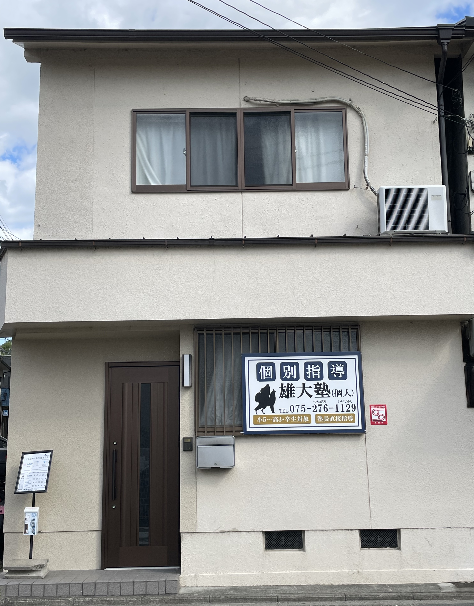
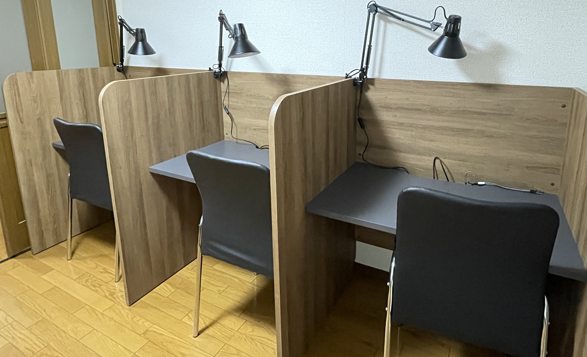

個別指導 雄大塾(個人)
京都市伏見区深草直違橋片町527-2
雄大塾
-プロによる本格指導-
指導経験豊富な塾長自らが一人ひとりに合わせて、優しく丁寧に指導します。授業時間中は常に「塾でしかできない学習」を求め、最大効率で受験勉強を支援します。無料体験授業も行っています。
体験・お問合せはこちら
講師紹介
講師は塾長のみ。深中・桃高卒業。数学・英語をはじめ、物理・化学など理系科目全般に精通。センター試験では数学・物理・化学満点を取得。中・高と(ほぼ)オール5(体育は4)で難関高対策に強み。
【略歴】
桃山高校自然科学科 卒業
神戸大学工学部機械工学科 中退
京都教育大学教育学部数学領域 卒業
- 小学校教諭二種免許状
- 中学校教諭一種免許状(数学)
- 高等学校教諭一種免許状(数学)

コース紹介
週1回コース（1回115分）
部活動との両立や、まずは学習習慣を身につけたい方におすすめです。小学生高学年以上なら「案外あっという間だった」という生徒さんがほとんど。
週2回コース（1回115分）
苦手科目の克服や、志望校合格に向けた受験対策に適しています。長期休暇の月だけ週2回通うことも可能です。学力向上には「自学での繰り返しの演習が必須」と考えておりますので、週2回以上の頻度のコースは現在用意していません。
同じ時間帯の生徒は最大2名（振替時のみ最大3名）までの、集中できる環境を整えています。
※料金等はページ下部のHPからご確認ください。
教室環境
📖綺麗な自習スペース
授業前後や授業がない日も利用可能。静かで集中できる環境を維持しています。充電ポートも完備しております。
✨快適な学習空間
空気清浄機を導入するなど衛生的な環境づくりに努めております。広々した机で、教材の出し入れの手間も減らしています。

アクセス
〒612-0867 京都市伏見区深草直違橋片町527-2（墨染駅より徒歩7分）
※駐輪場・駐車場はございません。